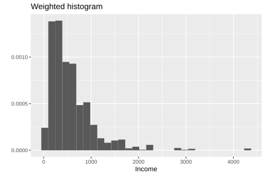
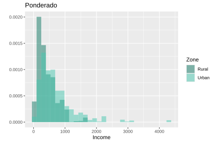
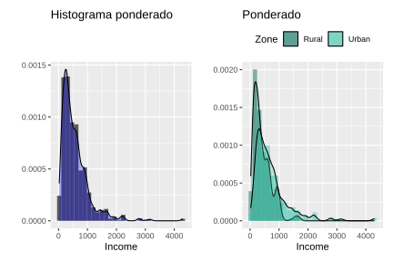
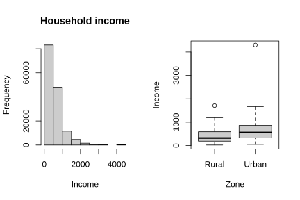
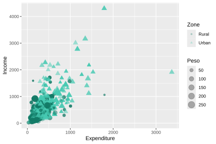

3.3 Visualization of continuous variables
The graphical representation of continuous variables is an essential component in the analysis of household surveys. Well-designed graphs allow you to identify distributions, trends and relationships between variables, facilitating the interpretation of the findings and their communication to different audiences (Wilkinson, 2005). A fundamental aspect in this context is that the graphs must incorporate the sampling weights to reflect the distribution of the population of interest.
This section uses the ggplot2 (Wickham, Chang, et al., 2026) and patchwork (Pedersen, 2025) packages for graph construction and composition, combined with survey (Lumley, 2024) and srvyr (Freedman Ellis & Schneider, 2024).
3.3.1 Histograms
A histogram is a graphical representation of the distribution of a continuous numerical variable, constructed from rectangles whose height is proportional to the frequency of observations within certain class intervals. In the context of household surveys, weighted histograms allow us to approximate the distribution of the variable in the population, incorporating the expansion factors associated with the sampling design.
Below is the weighted histogram of the variable Income, constructed incorporating the sampling weights (wk) in order to represent the estimated distribution of income in the population. The results obtained are shown in Figure 3.2:
weighted_income_hist <- ggplot(
data = survey_data,
aes(x = Income, weight = wk)) +
geom_histogram(aes(y = ..density..)) +
ylab("") +
ggtitle("Weighted histogram")
weighted_income_hist
Figure 3.2: Weighted histogram of household income
In this code, the graph construction starts with the survey_data database. Within aes(), the argument x = Income indicates that the variable represented on the horizontal axis corresponds to income, while weight = wk incorporates the sampling weights to construct a weighted histogram that reflects the estimated distribution in the population. The function geom_histogram() generates the histogram, and using aes(y = ..density..), the height of the bars is expressed in terms of density rather than absolute frequencies. ylab("") then removes the vertical axis label, and ggtitle("Weighted histogram") adds a descriptive title to the chart.
Histograms also allow you to visually compare the distribution of a variable between different subgroups of the population using the argument fill, which assigns a different color to each category. For example, it is possible to compare the income distribution between urban and rural areas, as shown in Figure 3.3:
zone_colors <- c(Urban = "#48C9B0", Rural = "#117864")
weighted_zone_hist <- ggplot(survey_data, aes(x = Income, weight = wk)) +
geom_histogram(
aes(y = ..density.., fill = Zone),
alpha = 0.5, position = "identity") +
scale_fill_manual(values = zone_colors) +
ylab("") +
ggtitle("Weighted")
weighted_zone_hist
Figure 3.3: Weighted histogram of income by geographical area
In this code, a weighted histogram is constructed using the survey_data database, where x = Income defines the variable represented on the horizontal axis and weight = wk incorporates the sample weights to reflect the population distribution of income. The geom_histogram() function generates the histogram and, through aes(y =..density.., fill = Zone), represents the bars in terms of density and assigns different colors according to the Zone variable, allowing the income distribution to be visually compared between zones. The alpha = 0.5 argument adds transparency to the bars to make it easier to overlay histograms, while position = "identity" allows the distributions to be drawn on top of each other rather than stacked. Subsequently, scale_fill_manual(values = zone_colors) manually defines the colors associated with each zone. Finally, ylab("") removes the vertical axis label, ggtitle("Weighted") adds a title to the chart.
Additionally, it is possible to superimpose smoothed density curves using the geom_density() function, which allows the shape of the distribution of the analyzed variable to be continuously displayed. This type of representation facilitates the identification of patterns such as asymmetries, concentration of observations or the presence of multiple modes. An example of this type of graph is presented in Figure 3.4:
weighted_income_hist + geom_density(fill = "blue", alpha = 0.3) |
weighted_zone_hist + geom_density(aes(fill = Zone), alpha = 0.3) +
theme(legend.position = "top")
Figure 3.4: Histograms with superimposed density curves for income and expenditure
3.3.2 Box plots (boxplots)
Boxplots allow you to identify outliers and evaluate the dispersion of the distribution. Introduced by John Tukey in 1977, they are a graphic representation that summarizes the distribution of a variable using statistics based on quartiles, allowing the median, dispersion of the data and the presence of outliers to be identified. In the context of household surveys, this type of graph is useful for comparing distributions between different population groups in a compact and visually intuitive way.
To construct boxplots weighted in ggplot2 the function geom_boxplot() is used, as shown in Figure 3.5. In this case, the function ggplot() starts the construction of the graph using the survey_data database, where x = Income defines the numerical variable analyzed and weight = wk incorporates the sampling weights to represent the estimated distribution in the population. Subsequently, geom_boxplot() generates the box plots and, using aes(fill = Zone) or aes(fill = Sex), assigns different colors to each category of the variables Zone and Sex, respectively, facilitating visual comparison between groups. The coord_flip() function inverts the axes to present the boxplots horizontally, thus improving their readability. For its part, scale_fill_manual() allows you to manually define the colors associated with each category using the zone_colors and sex_colors vectors.
weighted_zone_boxplot <- ggplot(survey_data, aes(x = Income, weight = wk)) +
geom_boxplot(aes(fill = Zone)) +
ggtitle("Weighted") +
coord_flip() +
scale_fill_manual(values = zone_colors)
sex_colors <- c(Male = "#5DADE2", Female = "#2874A6")
weighted_sex_boxplot <- ggplot(survey_data, aes(x = Income, weight = wk)) +
geom_boxplot(aes(fill = Sex)) +
ggtitle("Weighted") +
coord_flip() +
scale_fill_manual(values = sex_colors)
weighted_zone_boxplot | weighted_sex_boxplot
Figure 3.5: Weighted boxplots of income by area and sex
In addition to the tools available in ggplot2, the survey package offers specialized functions such as svyhist() and svyboxplot(), which directly incorporate the features of complex sample design into the construction of the graphs. These functions allow us to obtain graphical representations consistent with the survey design, facilitating the exploratory analysis of the numerical variables. An example of its application is presented in Figure 3.6.
par(mfrow = c(1, 2))
svyhist(~Income, survey_design,
main = "Household income",
col = "grey80", xlab = "Income",
probability = FALSE)
svyboxplot(Income ~ Zone, survey_design,
col = "grey80",
ylab = "Income", xlab = "Zone")
Figure 3.6: Histogram and boxplot of income adjusted to the complex sample design
3.3.3 Scatter plots
Scatter plots allow you to visually explore the relationship between two continuous variables, facilitating the identification of patterns of association, trends, and possible outliers. In the context of surveys with complex sample designs, it is important to incorporate information on sampling weights so that the graphical representation adequately reflects the relative contribution of each observation in the population.
According to Lumley (2010), when working with large data sets, plotting all points simultaneously can result in graphs that are difficult to interpret due to overlapping observations. However, in moderately sized samples, a simple and effective strategy is to represent the weights by the size of the symbols in the scatterplot. In this way, the observations with the greatest population weight appear visually highlighted. An example of this type of representation is presented in Figure 3.7:
weighted_basic_scatter <- ggplot(
data = survey_data,
aes(y = Income, x = Expenditure)) +
geom_point(aes(size = wk), alpha = 0.3)
weighted_basic_scatter
Figure 3.7: Scatter diagram between household income and expenditure
In this code, a scatterplot is constructed between the variables x = Expenditure and y = Income. The geom_point() function adds the points on the graph and, using aes(size = wk), uses the sampling weights (wk) to control the size of each point, so that observations with greater population representation appear visually more prominent. The alpha = 0.3 argument incorporates transparency to the points, reducing the overlapping problem and facilitating the visualization of areas with a high concentration of observations.
Additionally, it is possible to incorporate grouping variables in the scatter diagrams using the arguments shape and color, which allow observations to be visually differentiated according to specific categories of the population. This facilitates the identification of differentiated patterns between groups and improves the interpretation of the relationship between the analyzed variables. An example of this type of representation is presented in Figure 3.8.
weighted_zone_scatter <- ggplot(
data = survey_data,
aes(y = Income, x = Expenditure, shape = Zone)) +
geom_point(aes(size = wk, color = Zone), alpha = 0.3) +
labs(size = "Weight") +
scale_color_manual(values = zone_colors)
weighted_zone_scatter
Figure 3.8: Scatter diagram between income and expenditure by geographic area